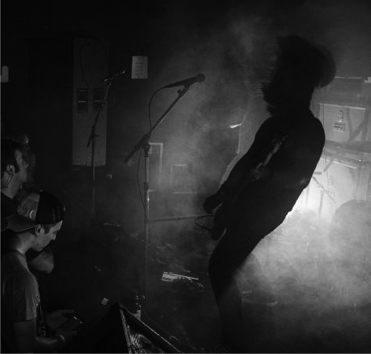
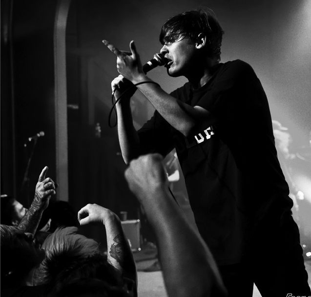
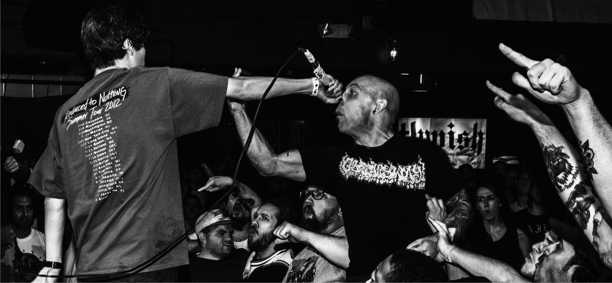

Laugh Tracks is the debut studio album by American hardcore punk band Knocked Loose, released on September 16, 2016. The album was produced by Will Putney, producer and guitarist for the bands END and Fit For An Autopsy, in Belleville, New Jersey after a friend showed Knocked Loose’s previous work to him and he gained a desire to produce their album.
